BLE 协议之 ATT
[toc]
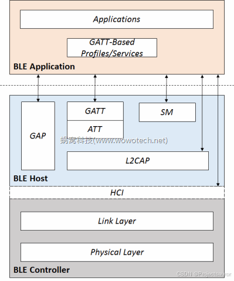
在前面的章节中，我们自低向上，分析了 BLE 协议栈中的 Physical Layer、Link Layer、L2CAP：
Physical Layer负责提供一系列的Physical Channel；- 基于这些
Physical Channel，Link Layer可在两个设备之间建立用于点对点通信的Logical Channel； L2CAP则将这个Logical Channel划分为一个个的L2CAP Channel，以便提供应用程序级别的通道复用。
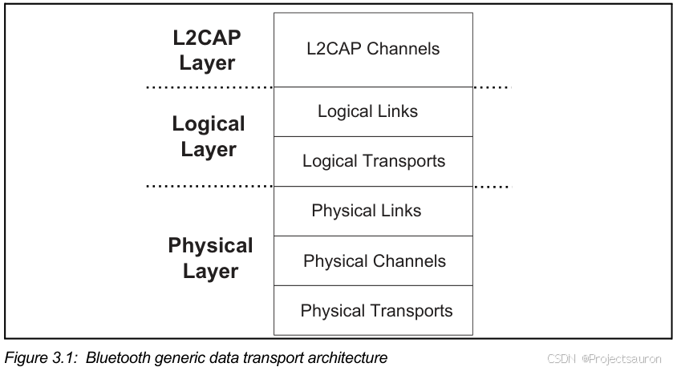
在 L2CAP 之上，就是 ATT 协议了，下面就来看一下 ATT 是什么。
一、简介
ATT (Attribute Protocol) ，BLE 属性协议，它是处于 L2CAP 协议层与 GATT 之间的一层属性操作协议，用于在一对蓝牙设备之间发现、读取、写入属性。
这一层的关键词是 Attribute(属性)。一个属性就是一条数据，属性是 BLE 数据提供单元，也是蓝牙空中传播数据的最上层，BLE 开发过程中接触最多的就是这一层。
属性协议允许称为服务器的设备向称为客户端的对等设备公开一组属性及其相关值。服务器公开的这些属性可以被客户端发现、读取和写入，并且 可以由服务器指示和通知。
属性是一个离散值，它具有以下三个特征：
- 属性类型，通过
UUID表示- 属性类型指定属性表示什么含义。
- 属性句柄
- 属性句柄在服务器上==唯一标识==一个属性，允许客户端在==读==或==写==请求中引用该属性
- 客户端使用句柄来识别是哪个属性发送过来的通知或者指示， 客户端能够发现服务器属性的句柄
- 属性权限
- 由每个使用该属性的更高层次规范定义的一组权限；不能使用 Attribute 协议访问这些权限。
- 权限可以应用于属性以防止应用程序获取或更改属性的值。 属性可以由更高层规范定义为可读或可写或两者兼有，并且可能具有额外的安全要求。
二、ATT 的作用
在物联网中最重要、最广泛的一类应用就是信息的采集 。
这些信息往往都很简单，如温度、湿度、速度、位置信息、电量、等等。采集的过程也很简单，节点设备定时的向中心设备汇报信息数据，或者，中心设备在需要的时候主动查询。
基于信息采集的需求，BLE 抽象出一个协议： Attribute protocol，该协议将这些“信息”以“ Attribute（属性）”的形式抽象出来，并提供一些方法，供远端设备读取、修改这些属性的值 （Attribute value）。
三、ATT 属性结构
下图就是一条属性的结构：
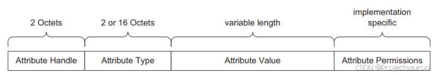
Attribute Handle：服务器端的属性的==唯一标识==，由每个服务器分配给它自己的属性，以允许客户端引用这些属性。通常用 16bit 的值表示，用作唯一识别Attribute server上的所有Attribute。Attribute Handle的存在有如下意义：- 一个
Server上可能存在多个相同Type的Attribute，而客户端有区分这些Attribute的需要。 - 同一类型的多个
Attribute，可以组成一个Group，Client可以通过这个Group中的起始Handle访问所有的Attributes。 - 值为
0x0000的属性句柄保留供将来使用。 值为0xFFFF的属性句柄称为最大属性句柄。
- 一个
Attribute Type：使用通用唯一标识符 (UUID：universally unique identifier) 来表示，类似于我们常说的“温度”、“湿度”等人类可识别的术语。- 用于识别属性类型的UUID包含了一些最基本的属性类型，一般用于GATT规范，而非具体的服务，这些属性类型包括：
- 首要服务
- 次要服务
- 包含
- 特性
- 用于识别属性类型的UUID包含了一些最基本的属性类型，一般用于GATT规范，而非具体的服务，这些属性类型包括：
Attribute Value：Attribute Type是一个字节数组，可以是固定长度或可变长度。- 例如，它可以是一个字节的值，或4个字节整数，或可变长度的字符串。 一个属性可能包含一个太大而无法在单个 PDU 中传输的值，但是可以使用多个 PDU 发送。
属性值用于表示设备公开的状态信息。属性值对于ATT协议来说并不重要，但他对于上层，包括GATT和GAP来说有着相当重要的意义。
- 例如，它可以是一个字节的值，或4个字节整数，或可变长度的字符串。 一个属性可能包含一个太大而无法在单个 PDU 中传输的值，但是可以使用多个 PDU 发送。
Permission：属性访问权限- 访问有关的权限（
Access permissions），Readable、Writeable以及Readable and writable； - 加密有关的权限（
Encryption permissions），Encryption required和No encryption required； - 认证有关的权限（
Authentication permissions），Authentication Required和No Authentication Required； - 授权有关的权限（
Authorization permissions），Authorization Required和No Authorization Required。
- 访问有关的权限（
UUID
UUID 是一个 16 字节的数据，设备间为了是被数据类型需要发送长达 16 字节的数据。为了提高传输效率，SIG 定义了一个称为蓝牙 UUID 基数的 128 位通用唯一识别码，结合一个较短的 16 位数使用。二者任然遵循通用唯一识别码的分配规则，只不过设备间传输常用 UUID 时，只发送较短的 16 位版本，接收方收到后补上蓝牙 UUID 基数即可。
蓝牙UUID基数为：$0x0000xxxx-0000-1000-8000-00805F9B34FB$。例如要发送 16 位识别码为 0x2A01，完整 128 位的 UUID 为：$00002A01-0000-1000-8000-00805F9B34FB$。
如下图是规定好的一些 16 位UUID 值（完整部分见：Assigned Numbers），用于固定的功能。如果我们想自己定义一个 UUID 的话，一定不要和这些重复。
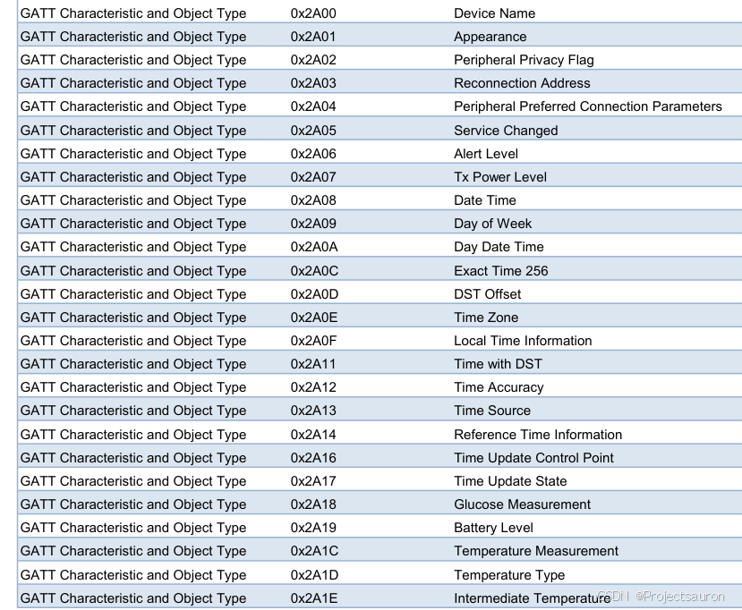
四、ATT PDU 结构
1、属性访问方法
Attribute PDU 用于空中传播，其有几种类型：
客户端发送到服务端的 PDU 有：
Commands、Requests、Confirmations服务端发送到客户端的 PDU 有：
Responses、Notifications、Indications命令(
Command)，客户端发送给服务端，不要求服务端回复请求(
Requests)，客户端发送给服务端，要求服务端回复响应(
Responses)，客户端发送了一个请求，服务端用此响应通知(
Notifications)，服务端发给客户端的数据，不要求客户端回复指示(
Indications)，服务端发给客户端的数据，要求客户端回复确认(
Confirmations)，服务端发给客户端的数据，客户端用此进行回复
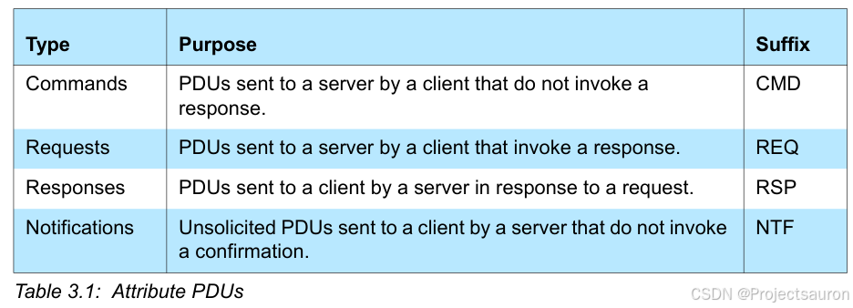
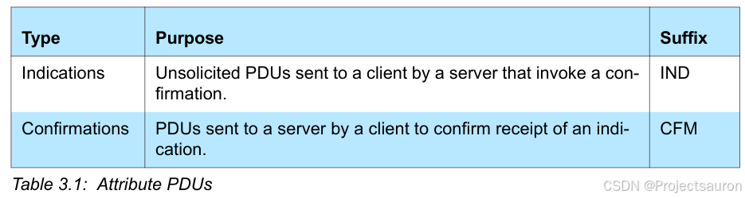
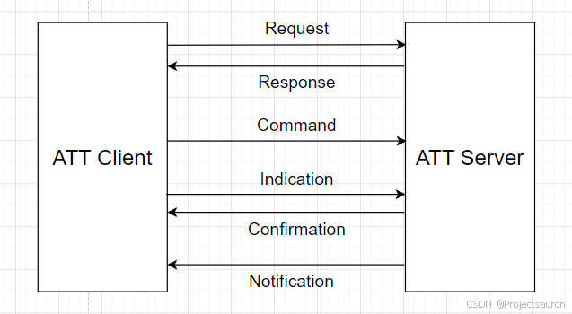
2、包格式
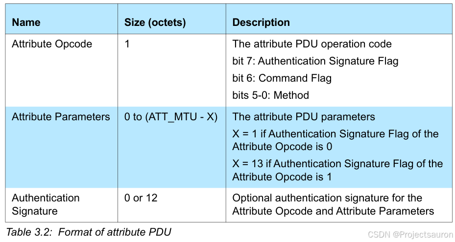
Attribute Opcode：- Bit5-0 用于标识每一条 ATT PDU 类型
- bit6 用于标识该 PDU 是否为 Command (当该标志设置为 1，表示这是一个命令)
- bit7 用于标识是否含有
Authentication Signature字段
Attribute Parameters：属性参数，包括各种参数等Attribute Signature：认证许可信息，该字段的存在，取决于 Opcode 的 bit7
其中， ATT PDU 的 Opcode 字段取值有 ：
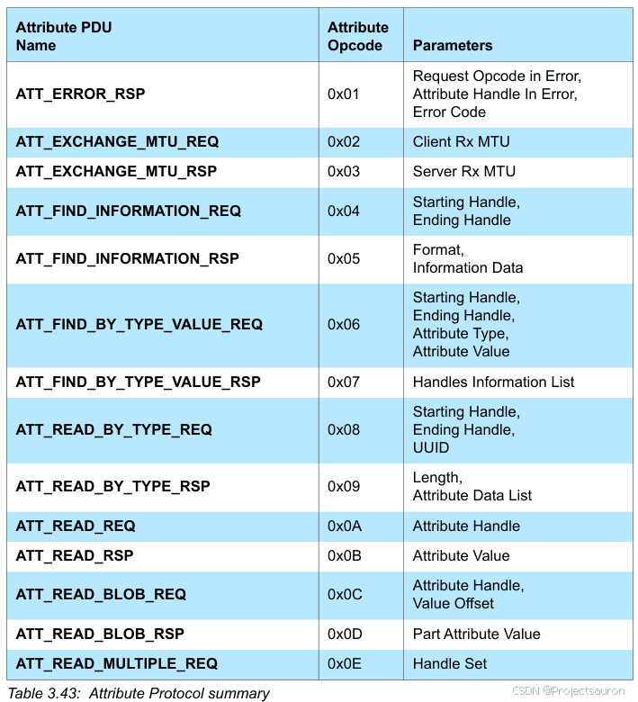
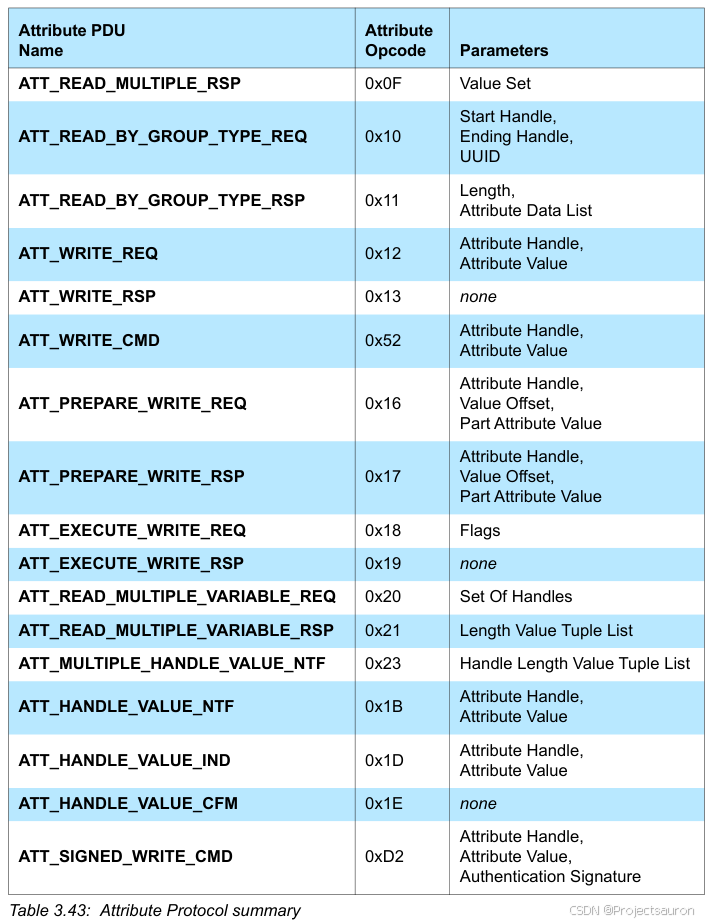
每一个类型对应不同的命令，不同的命令又对应不同的参数
3、Attribute Protocol PDUS
下面介绍一些 ATT 协议所涉及的 PDU，具体更多查阅手册。
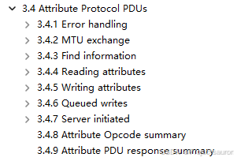
3.1 MTU exchange
交互图如下：
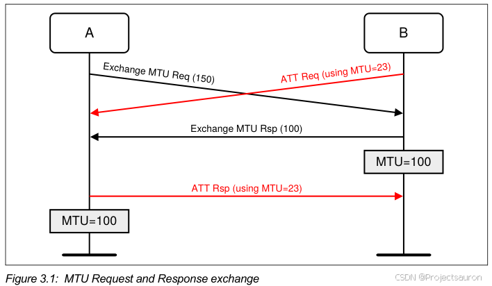
这里涉及到两个命令：
ATT_EXCHANGE_MTU_REQ：客户端通知服务端，最大接收的 MTU 大小
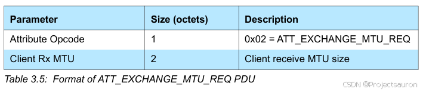ATT_EXCHANGE_MTU_RSP：服务端回复客户端，支持的最大 MTU 大小
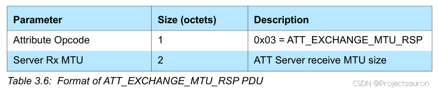
3.2 Reading attributes
ATT_READ_BY_TYPE_REQ：在指定的 handle 范围内，获取已知属性类型的属性值
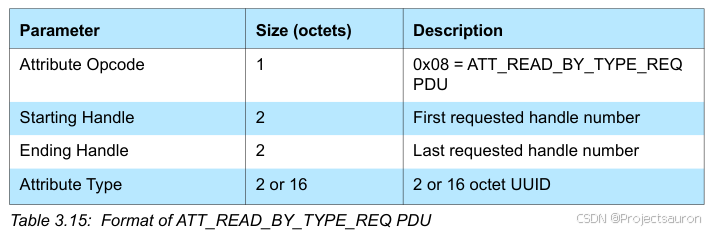
ATT_READ_BY_TYPE_RSP：回复 request 命令，包含要获取的属性值信息
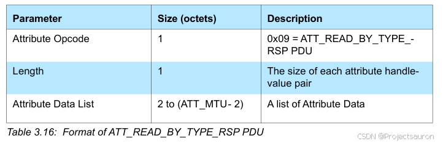